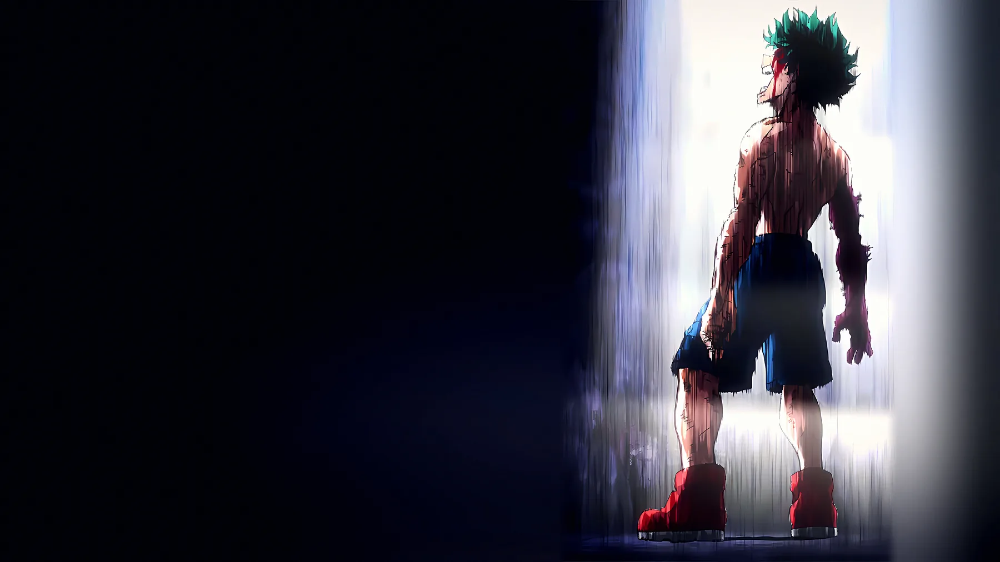

11 · Direction artistique · 2026
Série de fonds d'écran, un visuel et ses déclinaisons
Un même visuel décliné en dizaines de variantes et sur trois formats : 8K, 4K et écran de téléphone. Un système de design, pas un one-shot.
- Cadre
- Projet personnel
- Rôle
- Direction artistique et production
- Formats
- 8K, 4K, téléphone 1206 x 2622
- Livrables
- Série de variantes nommées

Contexte
Un fond d'écran n'est pas une image qu'on regarde, c'est une image derrière des icônes. Le vrai problème n'est pas de faire joli, c'est de garder une zone calme là où le système pose ses éléments, et de tenir sur des formats très différents.
L'illustration de départ n'est pas de moi. Le travail porte sur la composition, le traitement et le système de déclinaisons.
Ce que j'ai fait
- Composition autour des zones d'interface. Masse sombre à gauche, sujet à droite, dégradé latéral pour que les icônes restent lisibles.
- Série de traitements. Sérigraphie une encre, sérigraphie deux encres, duotone, poster, pellicule, collage, glitch, noir mat, fond flou léger et moyen, version couleur en grand.
- Déclinaison par format. 8K et 4K pour l'écran, format vertical pour téléphone, avec recadrage et recomposition à chaque fois, pas un simple redimensionnement.
- Comparaison de pistes. Plusieurs propositions montrées côte à côte, puis une sélection argumentée plutôt qu'un choix au hasard.
- Montée en résolution. Passage par un modèle d'augmentation de résolution pour tenir le 8K sans artefacts visibles.
Résultat
- Variantes produites
- des dizaines
- Formats
- 3
- Résolution max
- 8K
La série est nommée, donc retrouvable : chaque variante a un identifiant de traitement et de format. C'est ce qui transforme une collection d'images en système.
Limites
- L'illustration de base appartient à une œuvre existante, le travail porte sur la composition et le traitement.
- La montée en résolution reste une interpolation : elle ne crée pas de détail absent de la source.
- Beaucoup de variantes explorées, peu sélectionnées et documentées. Le tri aurait dû venir plus tôt.
- Aucun test de lisibilité réelle sur téléphone avec les icônes du système par dessus.
Ce que ça démontre
Construire un système de déclinaisons cohérent plutôt qu'une image unique : identifiants de variante, contraintes par format, sélection argumentée.
Et une compétence directement utile ailleurs : comprendre qu'une image d'interface doit être composée pour l'interface, pas pour elle même.